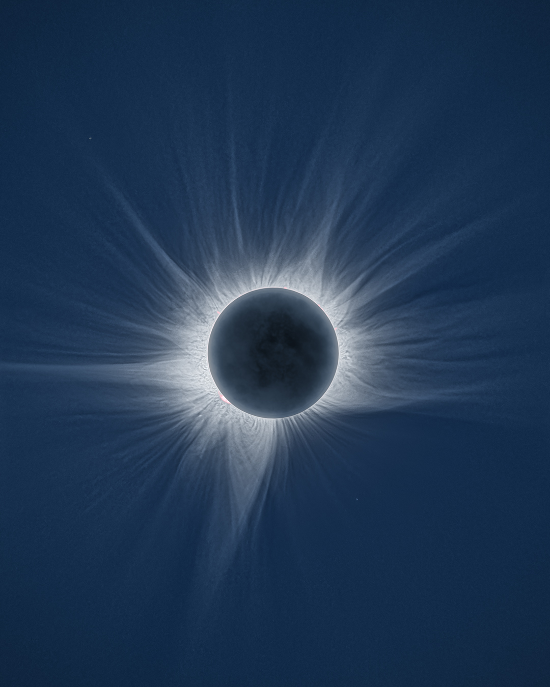
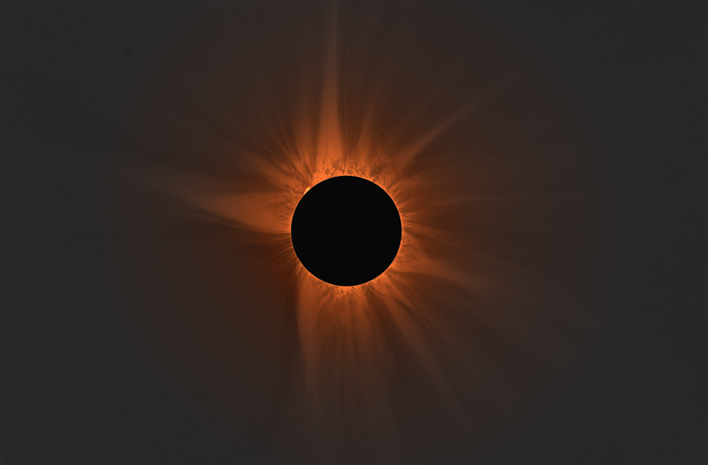
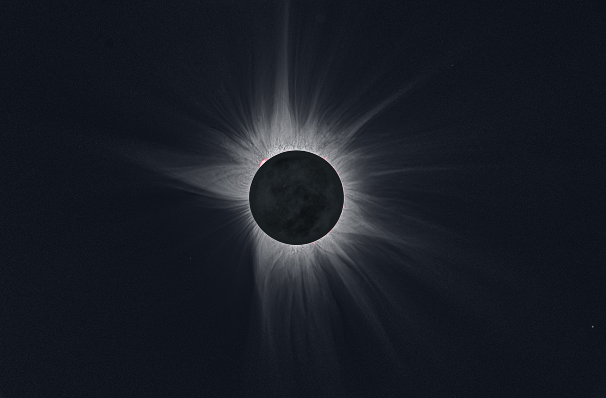
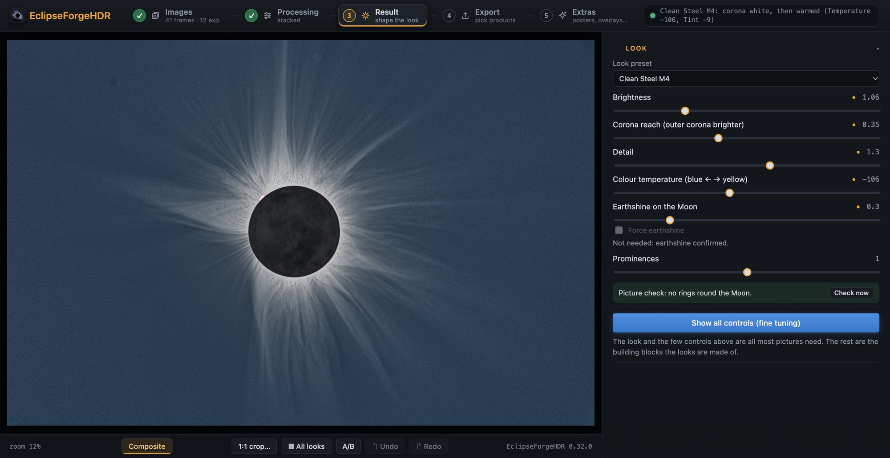
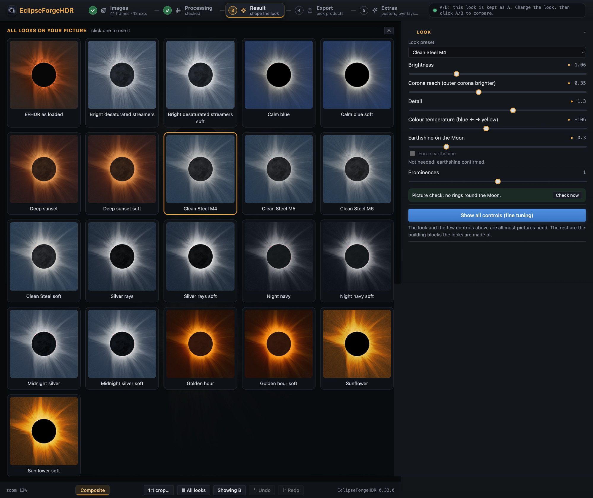

Your bracketed totality frames in, a finished corona picture out.
The inner and the outer corona in one image, the Moon with its earthshine and the prominences sharp, without rings at the limb.

Pick the file for your computer
All files are on the GitHub Releases page. The buttons below fetch the newest version.
Three steps
Images
Choose the folder with your raw files. EclipseForgeHDR checks how the set was shot and sets what this set needs.
Processing
Press Start. A few minutes later the picture is there.
Result & export
Pick a look — All looks shows every look on your own picture — then export the picture, the polar map and the extras.




Made for eclipse brackets
Documentation and test data
Getting Started →
PDF, 9 pages: a first run with screenshots, from download to export, and what to do when the picture looks wrong.
Manual →
PDF, 30 pages: every tab and every setting, preparing your data, the layers, troubleshooting and a glossary.
Sample dataset →
No eclipse frames of your own? A complete totality set (about 0.9 GB, FITS at half resolution) for a quick test. CC BY-NC 4.0.
Questions or a run that went wrong? Open an issue on GitHub Issues with the log — no raw data needed.